U.S. Presidents
List of all 45 U.S. Presidents
A list of all 45 United States Presidents, their party affiliation, terms served and years served.
| No. | President | Party | Terms Served | Years Served |
|---|---|---|---|---|
| 1 | George Washington |
Federalist | 2 terms | 1789 - 1797 |
| 2 | John Adams |
Federalist | 1 term | 1797 - 1801 |
| 3 | Thomas Jefferson |
Democratic-Republican | 2 terms | 1801 - 1809 |
| 4 | James Madison |
Democratic-Republican | 2 terms | 1809 - 1817 |
| 5 | James Monroe |
Democratic-Republican | 2 terms | 1817 - 1825 |
| 6 | 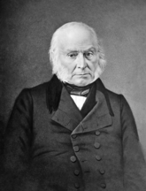John Quincy Adams |
Democratic-Republican | 1 term | 1825 - 1829 |
| 7 | 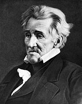Andrew Jackson |
Democratic | 2 terms | 1829 - 1837 |
| 8 | 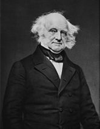Martin Van Buren |
Democratic | 1 term | 1837 - 1841 |
| 9 | 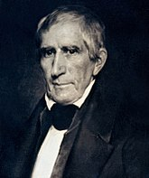William Henry Harrison |
Whig | 1 term | 1841 - 1841 |
| 10 | 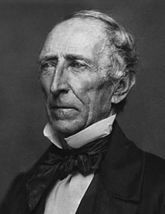John Tyler |
Whig | 1 term | 1841 - 1845 |
| 11 | 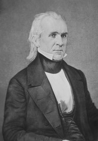James K. Polk |
Democratic | 1 term | 1845 - 1849 |
| 12 |  Zachary Taylor |
Whig | 1 term | 1849 - 1850 |
| 13 | 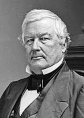Millard Fillmore |
Whig | 1 term | 1850 - 1853 |
| 14 | 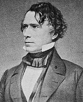Franklin Pirece |
Democratic | 1 term | 1853 - 1857 |
| 15 | 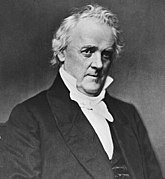James Buchanan |
Democratic | 1 term | 1857 - 1861 |
| 16 | Abraham Lincoln |
Republican | 2 terms | 1861 - 1865 |
| 17 | 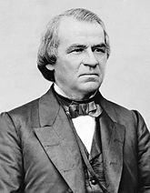Andrew Johnson |
Democratic | 1 term | 1865 - 1869 |
| 18 | 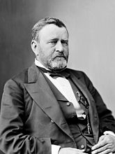Ulysses S. Grant |
Republican | 2 terms | 1869 - 1877 |
| 19 | 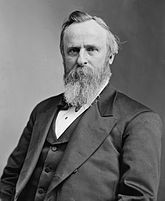Rutherford B. Hayes |
Republican | 1 term | 1877 - 1881 |
| 20 | 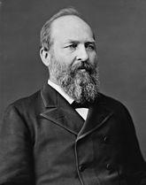James A. Garfield |
Republican | 1 term | 1881 - 1881 |
| 21 | 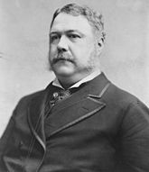Chester A. Arthur |
Republican | 1 term | 1881 - 1885 |
| 22 | Grover Cleveland |
Democratic | 1 term | 1885 - 1889 |
| 23 | 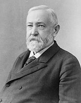Benjiman Harrison |
Republican | 1 term | 1889 - 1893 |
| 24 | Grover Cleveland |
Democratic | 1 term | 1893 - 1897 |
| 25 | William McKinley |
Republican | 2 terms | 1897 - 1901 |
| 26 | 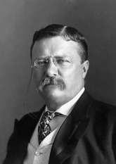Theodore Roosevelt |
Republican | 2 terms | 1901 - 1909 |
| 27 | 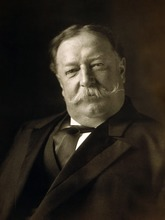William Howard Taft |
Republican | 1 term | 1909 - 1913 |
| 28 | Woodrow Wilson |
Democratic | 2 terms | 1913 - 1921 |
| 29 | Warren G. Harding |
Republican | 1 term | 1921 - 1923 |
| 30 | 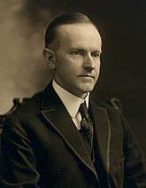Calvin Coolidge |
Republican | 2 terms | 1923 - 1929 |
| 31 | 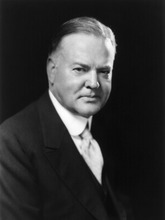Herbert Hoover |
Republican | 2 terms | 1929 - 1933 |
| 32 | Franklin D. Roosevelt |
Democratic | 3 terms | 1933 - 1945 |
| 33 | Harry S. Truman |
Democratic | 2 terms | 1945 - 1953 |
| 34 | Dwight D. Eisenhower |
Republican | 2 terms | 1953 - 1961 |
| 35 | John F. Kennedy |
Democratic | 1 term | 1961 - 1963 |
| 36 | Lyndon B. Johnson |
Democratic | 2 terms | 1963 - 1969 |
| 37 | Richard Nixon |
Republican | 2 terms | 1969 - 1974 |
| 38 | Gerald Ford |
Republican | 1 term | 1974 - 1977 |
| 39 | Jimmy Carter |
Democratic | 1 term | 1977 - 1981 |
| 40 |  Ronald Reagan |
Republican | 2 terms | 1981 - 1989 |
| 41 | George H. W. Bush |
Republican | 1 term | 1989 - 1993 |
| 42 | Bill Clinton |
Democratic | 2 terms | 1993 - 2001 |
| 43 | George W. Bush |
Republican | 2 terms | 2001 - 2009 |
| 44 | Barack Obama |
Democratic | 2 terms | 2009 - 2017 |
| 45 | Donald Trump |
Republican | 1 term | 2017 - Present |